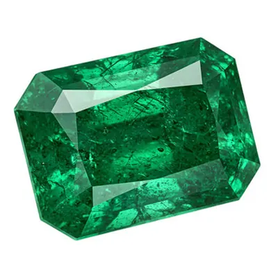

摩根石與金綠柱石：粉紅與金色的兄弟
綠柱石家族不只出產祖母綠與海藍寶——摩根石的粉與金綠柱石的金，是這個家族藏著的兩張王牌。

核心定義
摩根石（morganite）與金綠柱石（heliodor）是綠柱石家族的非傳統成員：摩根石的粉紅色來自錳（Mn），金綠柱石的金黃色來自鐵（Fe）。它們與祖母綠、海藍寶同屬 Be₃Al₂Si₆O₁₈，只是著色元素不同。
摩根石是 1910 年代才被命名的寶石，以銀行家兼寶石收藏家 J.P. Morgan 命名；金綠柱石的名字源自希臘語「太陽」（helios）——一粉一金，是綠柱石家族的「時尚擔當」。
特徵與分類
| 成員 | 顏色 | 致色元素 |
|---|---|---|
| 摩根石 | 粉紅、桃紅、橙粉 | 錳（Mn） |
| 金綠柱石 | 金黃、黃綠 | 鐵（Fe³⁺） |
| 紅綠柱石 | 深紅（極罕見） | 錳＋銫 |
| 無色綠柱石 | 無色 | — |
摩根石的粉紅常帶橙或紫調，市場偏愛「桃紅/鮭魚粉」的濃豔色；金綠柱石的金黃要純淨明亮，帶綠或帶橙者次之。兩者都常見大顆淨透的裸石，價格親民，是彩色寶石的入門優選。
科學原理
摩根石的粉紅來自錳離子（Mn²⁺/Mn³⁺）吸收黃綠段光；金綠柱石的金黃來自鐵離子（Fe³⁺）吸收藍紫段光。兩者的顏色都相對穩定，但也可能被加熱微調（如摩根石加熱去橙、金綠柱石加熱增金）。
紅綠柱石（bixbite）是家族裡的「隱藏版」：含錳與銫的深紅綠柱石，僅產於美國猶他州，產量極稀——它是世界上最稀有的寶石之一。
鑑定與鑑別方法
- 折射率 1.57–1.58、比重約 2.7 確認綠柱石
- 看顏色：錳的粉、鐵的金黃
- 顯微鏡找液體包裹體
- 區分粉紅碧璽（雙折射高、重影）
- 高價品送實驗室確認種類與處理
市場行情與保養建議
行情上，摩根石與金綠柱石是「性價比彩色寶石」：大顆、淨透、價格親民，尤其摩根石近年因「鮭魚粉」流行而受歡迎。頂級濃色的摩根石與純淨金黃色金綠柱石有獨立行情。
選購建議：摩根石選桃粉濃豔、金綠柱石選金黃純淨；兩者硬度 7.5–8，適合日常佩戴，但要避免碰撞與高溫。
常見誤區
摩根石是綠柱石家族（硬度 7.5–8），粉晶是石英（硬度 7）——不同礦物。摩根石價格與品質遠高於粉晶。
黃水晶是石英、金綠柱石是綠柱石——折射率、比重、硬度都不同。名稱像，本質不同。
冷知識
J.P. Morgan 是 20 世紀初的知名寶石收藏家，紐約自然史博物館的寶石廳就是他捐贈的——一顆粉紅寶石，記住了他的名字。
猶他州出產的紅綠柱石年產量以克拉計，市場幾乎買不到——它是綠柱石家族的「傳說級」成員。
反直覺觀點
祖母綠與海藍寶名滿天下數千年，摩根石與金綠柱石卻在近百年才成為寶石——家族的歷史，是「後輩逆襲」的故事。
天然摩根石多為淡粉，濃豔桃粉常靠大克拉或加熱——市場上的「鮭魚粉」，很多是挑色與優化的結果。